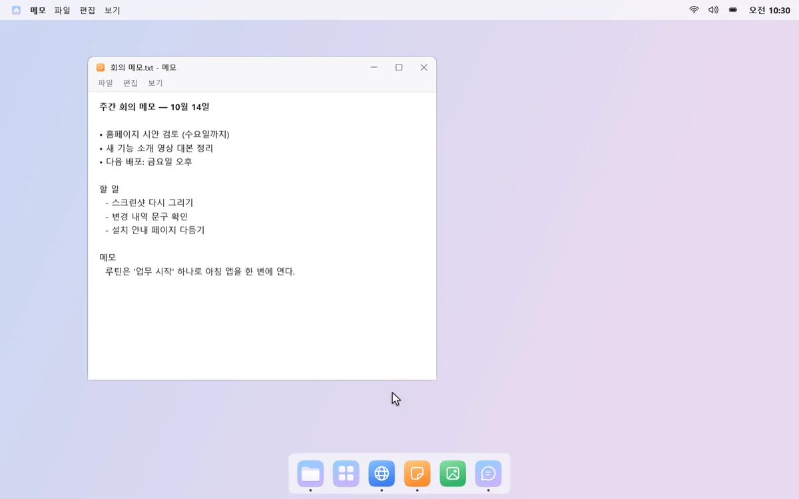


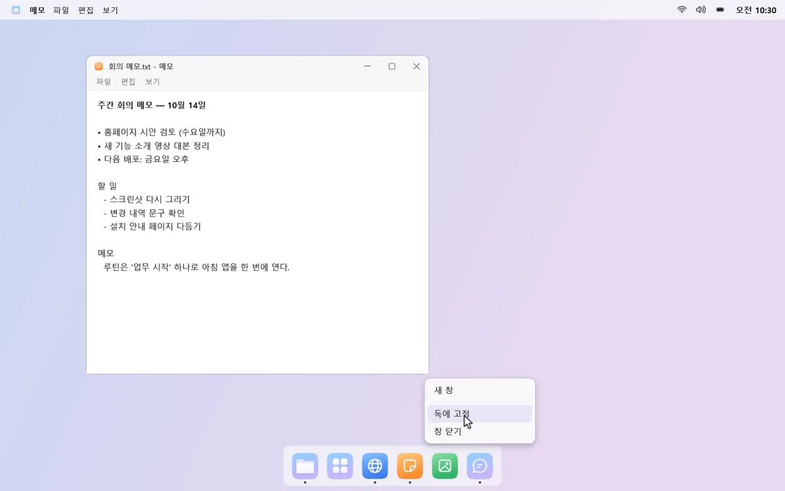
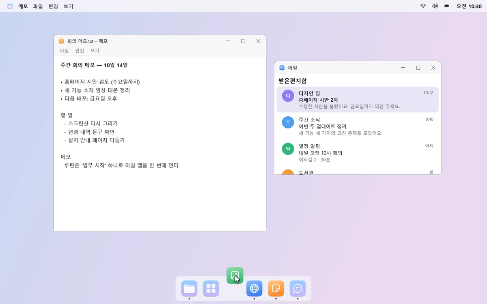
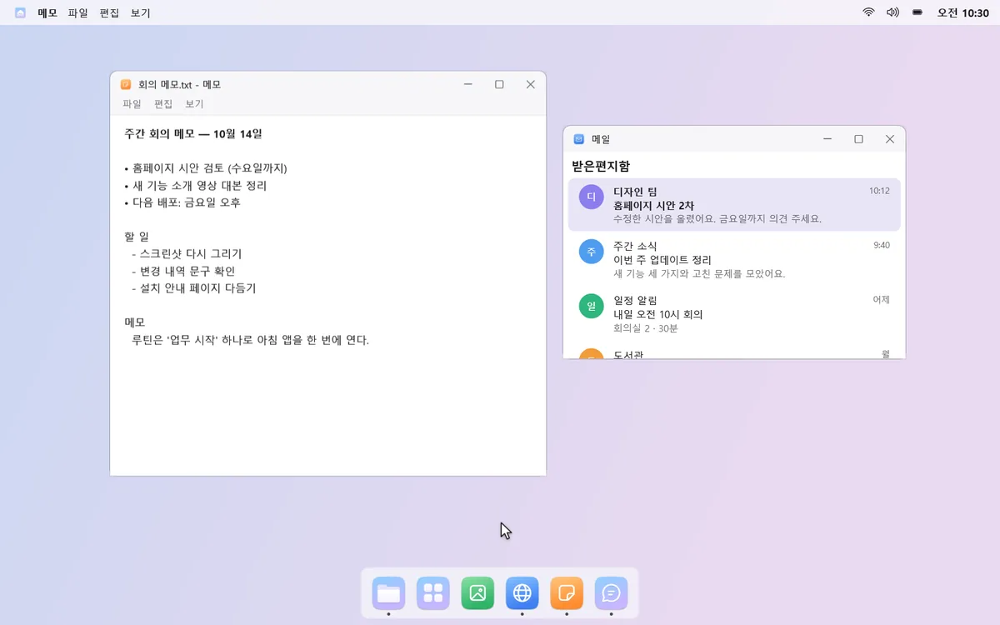
아래엔 앱을 켜고 고르는 독, 위엔 앱 메뉴·제어 센터·달력이 모인 상단바. 자주 같이 여는 앱은 루틴으로 한 번에 열어요.
₩9,900 한 번 구매 · 15일 동안 모든 기능 무료 체험 · 구독·광고 없음
윈도우 11, 윈도우 10 버전 2004 이상 · x64 PC
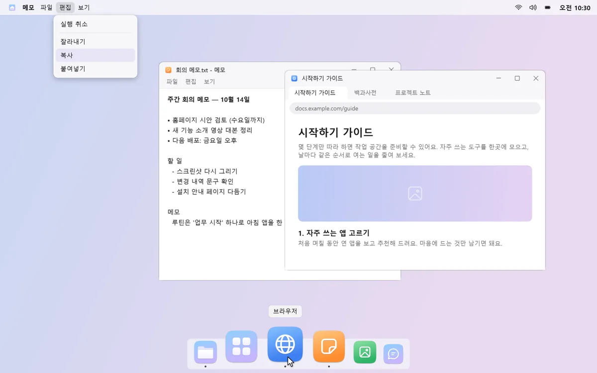
작업 표시줄은 꽉 찼는데, 찾는 앱은 안 보여요.
소리·밝기·달력을 바꾸려면 여기저기 눌러야 해요.
메일, 메신저, 문서 창을 하나씩 열고 하나씩 끌어다 놓아요.
몽독은 이런 작은 수고를 덜어 줘요.





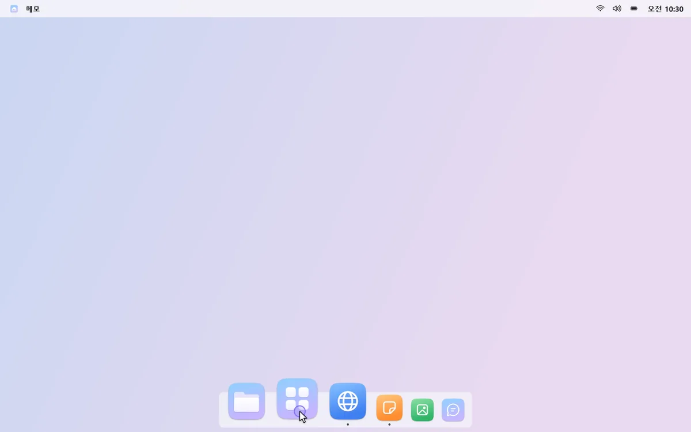
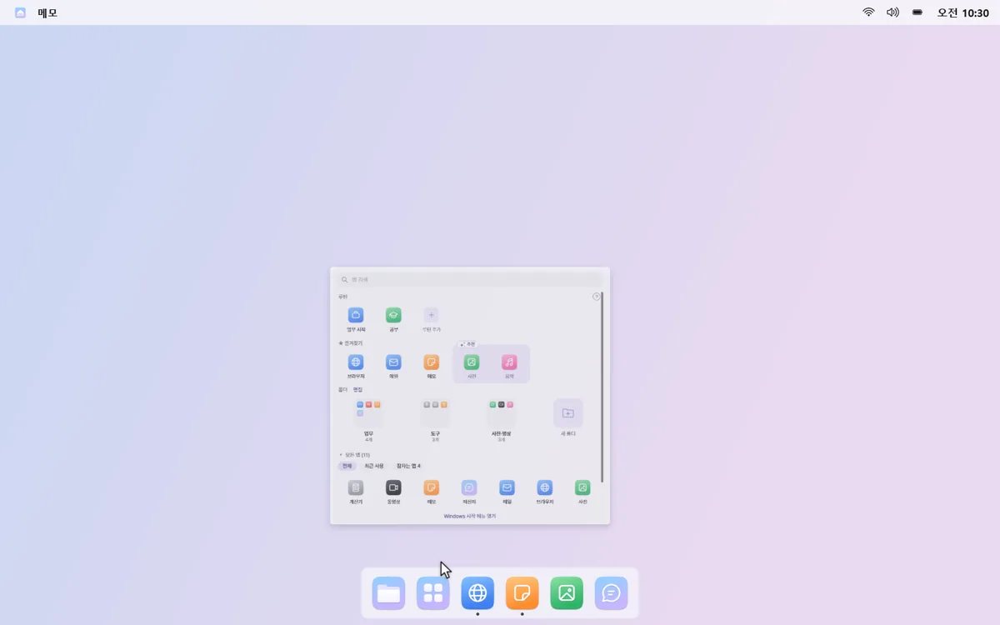
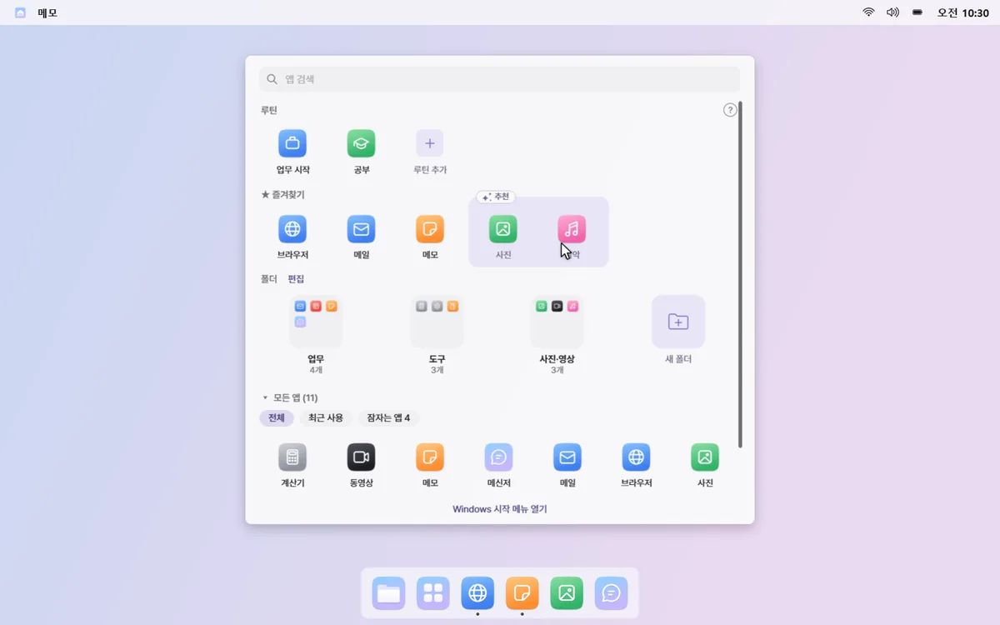
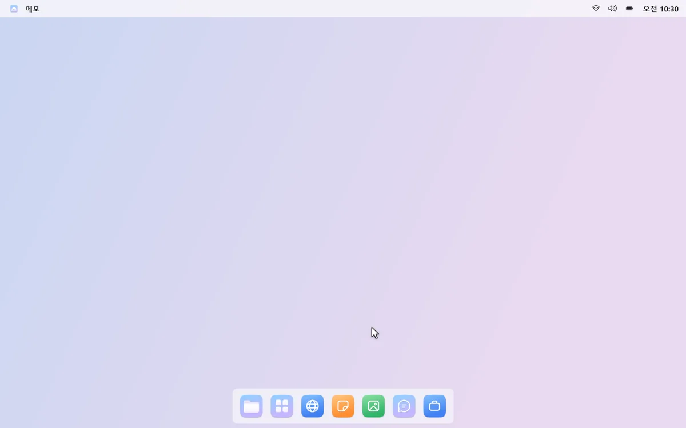
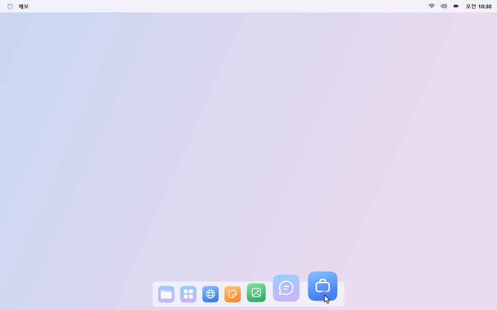
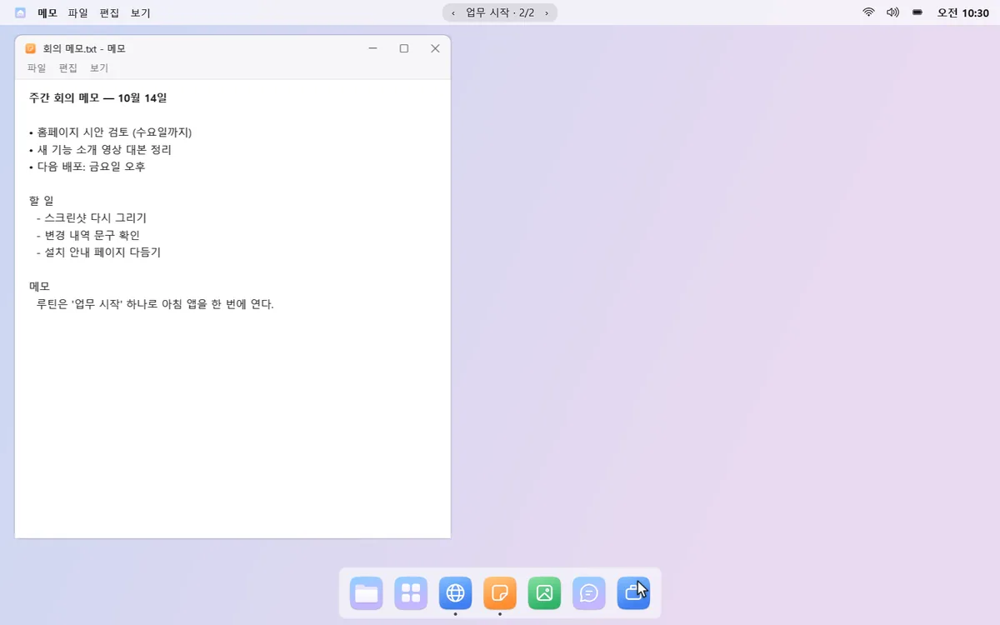
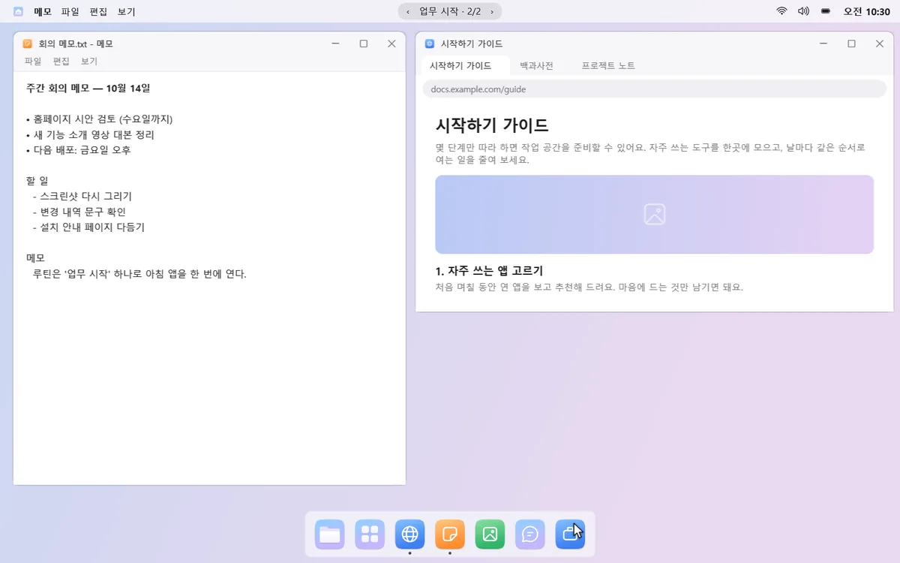
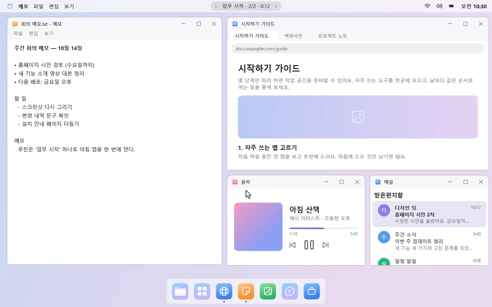
앱 실행 기록, 창 제목, 루틴, 알림 내용은 이 PC 안에서만 써요. 브라우저 주소창이나 방문 기록은 읽지 않아요. 사용 통계는 동의한 경우에만, 개수만 보내요.
몽독이 켜져 있는 동안만 작업 표시줄을 숨겨요. 일시 정지하거나 끄면 원래대로 돌아와요.
“몽독 제거하기…”를 누르면 작업 표시줄·자동 숨김·알림 소리를 되돌린 뒤 제거 화면을 열어 줘요.
15일 무료 체험